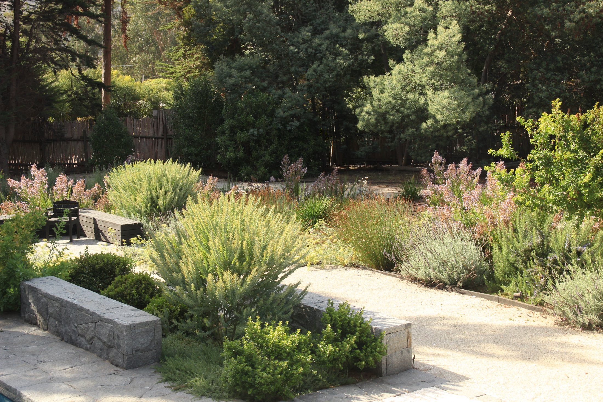
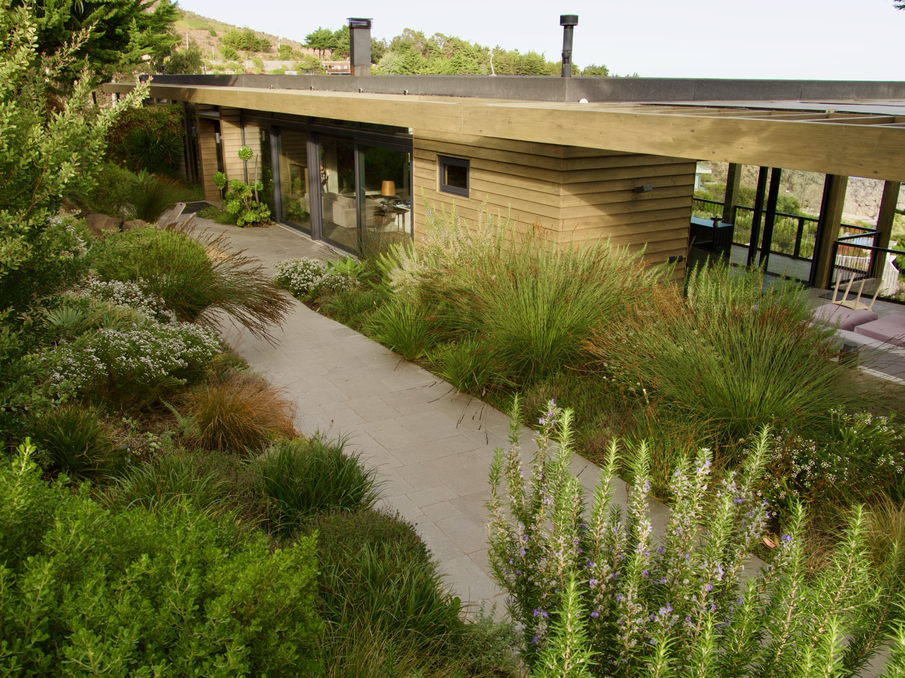
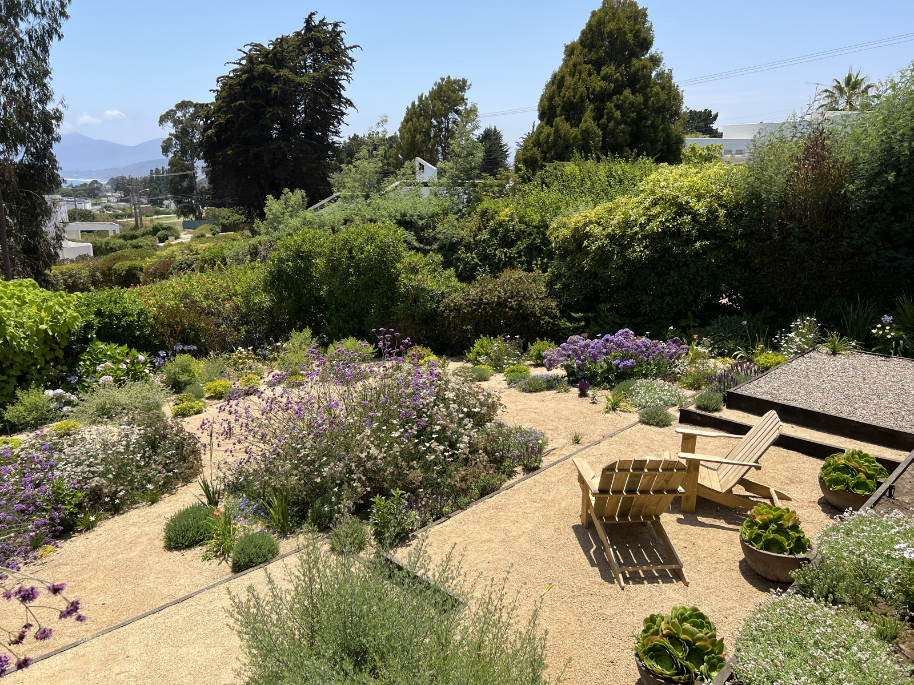

Jardines
con esencia
El Pangue CT — jardín sobre la roca
Diseñamos paisajes donde la vegetación, la arquitectura y la obra construyen una única experiencia del lugar.
Conócenos
Proyectos destacados
Ver todos
Qué hacemos
Carola Page desarrolla jardines y paisajes que buscan revelar el carácter particular de cada lugar, equilibrando la sensibilidad y la visión de un artista con el rigor, el conocimiento y la atención al detalle propios del oficio. Cada proyecto nace de una observación profunda del entorno, reconociendo en la luz, el clima, la topografía, la vegetación existente y las formas de habitar las claves para construir una propuesta única y vinculada a su contexto.

Diseño
de paisajeEl proyecto completo del jardín — trazado, recorridos y diseño vegetal — a partir de la luz, el suelo y la vegetación que ya están en el lugar.

Construcción
La ejecución en obra de lo proyectado: movimiento de tierra, plantación, riego y las estructuras que sostienen el jardín.

Mantención
y AsesoríaEl acompañamiento después de la entrega, para que el jardín llegue a su madurez como fue pensado. También asesorías puntuales sobre jardines ya existentes.

Obras
de exteriorPiscinas, muros, soleras, jardineras, gradas y bancos en piedra, hormigón o madera, diseñados junto con la vegetación y no como un añadido.